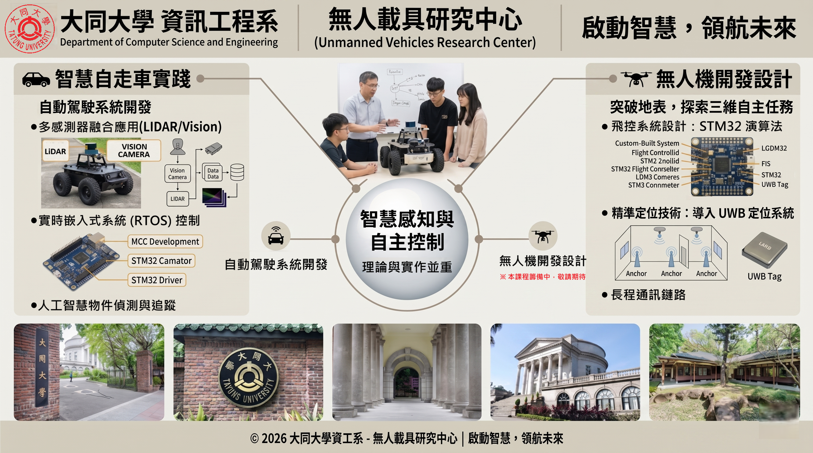
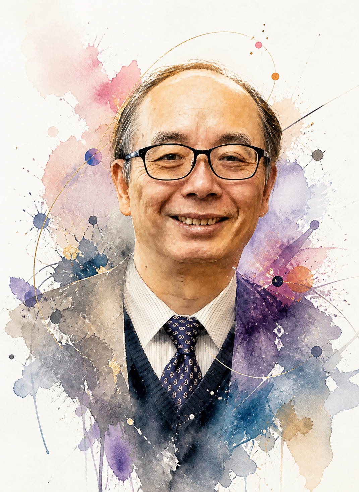
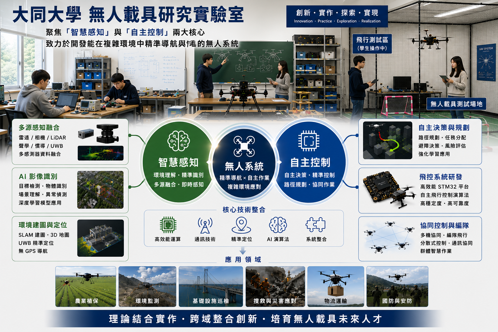
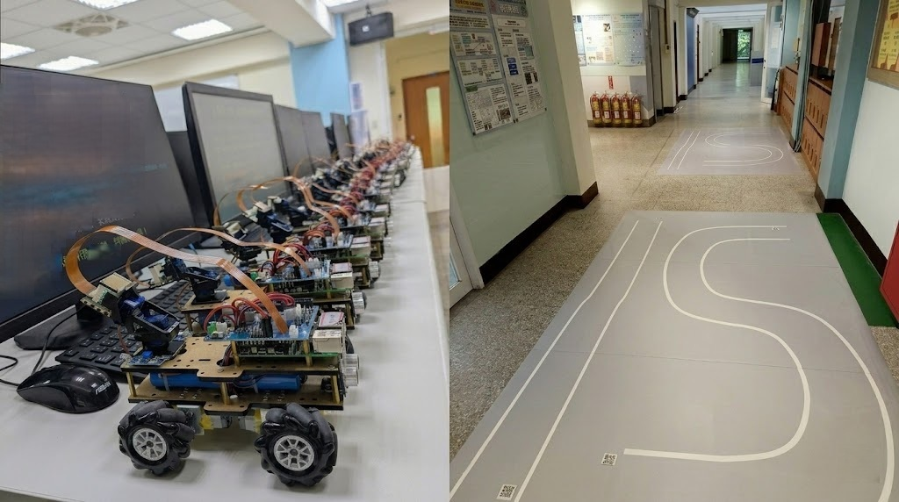
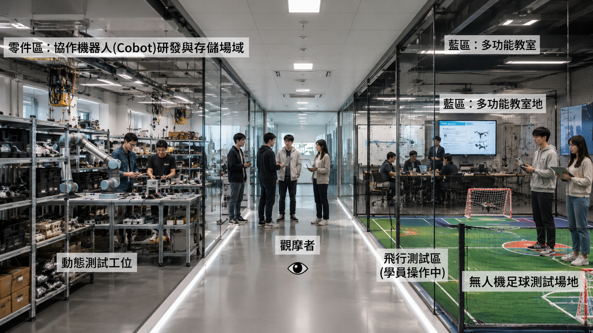

啟動智慧，領航未來：人工智慧與自主系統開發的創新搖籃
本中心聚焦於「智慧感知」與「自主控制」兩大核心，致力於開發能在複雜環境中執行精準導航與作業的頂尖無人系統。我們秉持「理論與實作並重」的跨領域教學理念，帶領學生打破硬體開發與軟體演算法的界線，從底層邏輯到高階 AI，培育具備全端系統整合能力的次世代科技人才。


卓世明老師致力於將 AIoT 跨領域技術落實於具體之「智慧防護系統」，透過軟硬體高度整合，開發具備商品化量能之無人化解決方案。目前研究主軸聚焦於多重定位導航、異質感測融合技術以及無人機與地面感測節點之協同防護網路。
運用 RGB-T 異質融合技術 及 Amodal Generative Augmentation，在複雜且具遮蔽的環境中，實現精準的靈長類動物偵測與辨識能力。
建立 單機無人機 (UAV) 與地面感測網路 (GSN) 的無縫協同架構，落實農漁牧場域之全方位即時防護與監控。
基於 STM32 控制核心與 RTOS 實時作業系統，開發具備自動化清洗功能之智慧魚菜共生系統，以及高效能之聲光驅趕裝置。

從基礎的馬達驅動到複雜的 AI 視覺辨識，這是一場從零到一的自造旅程。學生將在這裡親手打造具備「動態避障」與「路徑尋優」能力的智慧自走載具。

我們即將啟動進階無人機專案，帶領學生突破二維平面的限制，迎向更廣闊的「三維空間」自主飛行任務挑戰！

佐證將 AIoT 跨領域技術落實於智慧防護系統之具體研發與商品化量能。
"An Intelligent Orchard Anti-Damage System Combining Real-Time AI Image Recognition and Laser-Based Deterrence for Multi-Target Monkeys"
"Precision Detection and Identification of Macaca cyclopis in Complex Orchard Environments via Heterogeneous RGB-T Fusion and Amodal Generative Augmentation"
"Collaborative Single-UAV and Ground Sensor Network Architecture for Precision Primate Detection..."
"Optimizing a Smart Aquaponics System with Automated Cleaning Functionality using AIoT Technology"
"An AI-Powered Real-Time Image Recognition System with a Laser-Based Deterrent for Primate Pest Control in Orchards"